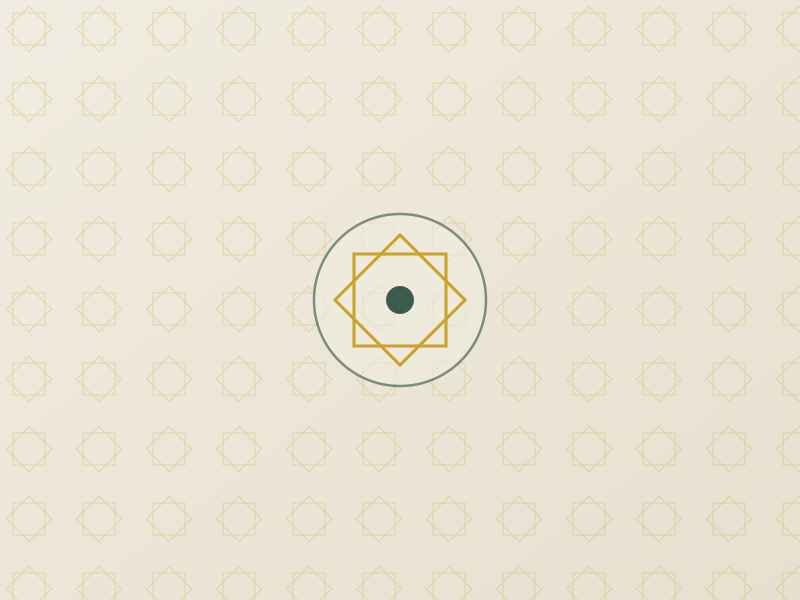

About Canolfan Iman Centre
Canolfan is the Welsh word for "centre" — and that is exactly what we aim to be: a spiritual, educational, and social centre for our community.
Rooted in North Wales
Canolfan Iman Centre, also known locally as Llandudno Junction Mosque, was established by Muslim families living across Conwy and the surrounding area who wanted a dedicated, dignified space for prayer, learning, and community life close to home.
[Site owner: add a short paragraph here on when and how the centre was founded, and any milestones since — e.g. acquiring the building, growth of the congregation, expansion of classes.]
Since then, the centre has grown into a hub not only for daily worship but for children's and adults' Islamic education, women's circles, youth activities, and practical support for families in need — open to the local Muslim community and warmly welcoming to our wider North Wales neighbours of all faiths and none.

Our Mission
"To serve our community through faith, education, compassion, and inclusion."
Faith
A welcoming space for the five daily prayers, Jumu'ah, and the major Islamic occasions.
Education
Qur'an, Arabic, and Islamic studies for children and adults alike.
Compassion
Zakat, Sadaqah, and food support for families who need a helping hand.
Inclusion
Open doors for every member of the local Muslim community and our wider neighbours.
A Centre for Every Stage of Life
Daily Worship
Five daily prayers, Jumu'ah, Taraweeh in Ramadan, and Eid celebrations — see our prayer times.
Madrasa & Classes
Qur'an, Arabic, and values-based learning for children, alongside adult Islamic classes and women's study circles.
Community Support
Zakat and Sadaqah distribution, food drives, and a listening ear for anyone going through a hard time.
Youth & Family
Sports, social events, leadership opportunities, and trips that keep our young people engaged and confident in their identity.
Interfaith Welcome
Open visits and conversations for schools, neighbours, and anyone curious about Islam and our community.
Funeral & Pastoral Support
[Site owner: add details here if the centre supports funeral arrangements (Janazah), counselling, or other pastoral care.]
Come and See for Yourself
Whether you're a longstanding member of the community or visiting for the very first time, we would love to welcome you.
Plan Your Visit